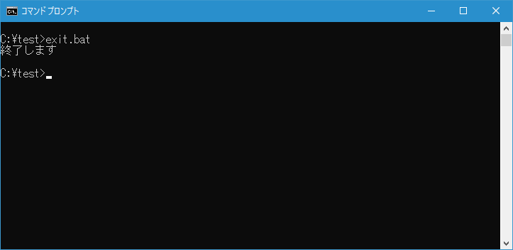
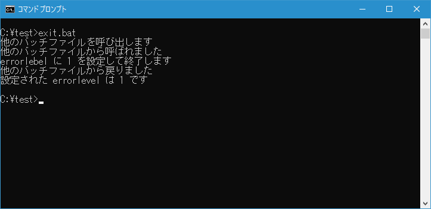

コマンドプロンプトまたはバッチファイルを終了(EXIT)
コマンドプロンプトや実行しているバッチファイルを終了することができる EXIT コマンドの使い方について解説します。
EXITコマンドの使い方
EXIT コマンドはコマンドプロンプトを終了したり、実行しているバッチファイルを終了したりするために使用します。書式は次の通りです。
EXIT [/B] [終了コード]
コマンドプロンプトで直接 EXIT と実行するとコマンドプロンプトが終了します。
コマンドプロンプトからバッチファイルを実行し、バッチファイルの中で EXIT を実行するとコマンドプロンプトが終了しますが、/B オプションを付けるとバッチファイルだけが終了してコマンドプロンプトへ制御が戻ります。
テストを行うために次のような簡単なバッチファイル exit.bat を c:\test に作成しました。
@echo off
echo 終了します
exit /b
バッチファイルを実行すると実行しているバッチファイルが終了しコマンドプロンプトへ制御が戻ります。

終了コードを設定する
EXIT コマンドを /B オプションを付けて実行する場合、終了コードを指定することができます。
EXIT /B 終了コード
バッチファイルの中で EXIT コマンド実行された場合、終了コードは環境変数 ERRORLEVEL で参照することができます。
テストを行うために次のような簡単なバッチファイル exit.bat および exit2.bat を c:\test に作成しました。
@echo off
echo 他のバッチファイルを呼び出します
call exit2.bat
echo 他のバッチファイルから戻りました
echo 設定された errorlevel は %errorlevel% です
@echo off
echo 他のバッチファイルから呼ばれました
echo errorlebel に 1 を設定して終了します
exit /b 1
バッチファイルでは CALL コマンドを使って他のバッチファイルを呼び出しています。呼ばれたバッチファイル内では EXIT コマンドで終了コードを設定して終了しています。元のバッチファイルに制御が戻ったあと環境変数 ERRORLEVEL の値を参照して画面に表示します。

EXIT コマンド実行時に設定した終了コードを、環境変数 ERRORLEVEL で参照することができました。
-- --
EXIT コマンドを使ってコマンドプロンプトまたはバッチファイルを終了する方法について解説しました。
( Written by Tatsuo Ikura )

著者 / TATSUO IKURA
初心者～中級者の方を対象としたプログラミング方法や開発環境の構築の解説を行うサイトの運営を行っています。